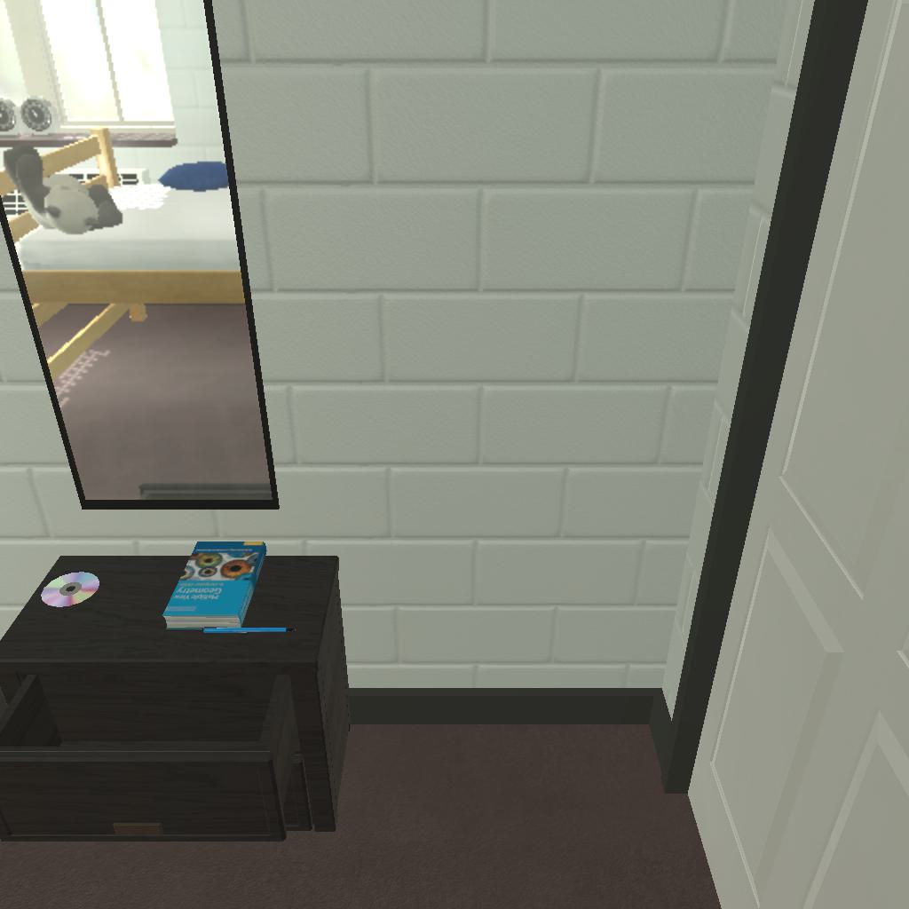

---------------------------------------------------------task: 8---------------------------------------------------------
--------------------------------------------------------------------------------------------------------------------------------------------------------------------
--------------------------------------------------------------------------------------------------------------------------------------------------------------------
Step:--------------------------------------------------------------------------16-------------------------------------------------------------------------------
----------------------------------------
VLM Prompt:
Image1:
**Instruction**
1. Analyze the provided image to identify all visible household objects, focusing on those relevant to the task description "put a laptop in desk."
2. Use the analysis of the image and the task hint "The agent must find an object of the desired type, pick it up, find the correct location to place it, and put it down there." to answer the question: what is the most reasonable action in the choices for the task description "put a laptop in desk"?
4. Decide and write the answer using the template: The answer is: (i): , where i is the real number. If there is no desired object in the image, search every place based on **Initial Observation** to find the object. And if no one is exactly correct, choose a similar answer.
**Initial Observation**
You are in the middle of a room. Looking quickly around you, you can see bed (1), garbagecan (1), desk (1), sidetable (1), drawer (1-5), laundryhamper (1)
**Answer Choices**
(1): go to bed 1
(2): go to garbagecan 1
(3): go to sidetable 1
(4): go to laundryhamper 1
(5): go to drawer 3
(6): go to drawer 4
(7): go to drawer 5
(8): open drawer 1
(9): close drawer 1
(10): take book 1 from drawer 1
(11): take cd 1 from drawer 1
(12): take pen 2 from drawer 1
(13): examine drawer 1
**Answer**
Let's think step by step by following the instructions.
----------------------------------------
----------------------------------------
Original Response:
Firstly, we need to analyze the image provided. In the image, we can see a sidetable with a CD and a book on it, and a reflection of the bed in the mirror. None of these objects are laptops, and the task description specifies "put a laptop in desk," so none of the objects in the image are relevant to the task.
Given the task hint, the agent must find a laptop, pick it up, and place it on the desk. Since the image does not show a laptop, we should refer to the Initial Observation for clues on where to find one. The Initial Observation mentions a desk and several drawers, which are typical places where one might find a laptop in a household setting.
Based on this information, the most reasonable action from the given choices would be to search the drawers, as laptops are often stored in drawers when not in use. The task does not specify which drawer the laptop might be in, but we can start by searching the first one.
The answer is: (8): open drawer 1.
----------------------------------------
----------------------------------------
>>> Refine Original VLM Response and Get Pure Action: open drawer 1
----------------------------------------
-----------------------------------------------------------------
Running time: 8.365672588348389 seconds
Total Money: 2.21992
-----------------------------------------------------------------
-----------------------------------------------------------------
Text Observation:Nothing happens.
-----------------------------------------------------------------
UNSUCCEED